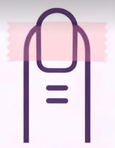
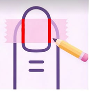
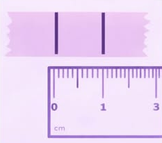

Para conocer tu talla ideal, sigue estos sencillos pasos con una cinta métrica o cinta adhesiva.
Cinta (idealmente de papel)
Lapicera o marcador
Una regla
Un papel

Iniciaremos cortando un pedazo de cinta y colocándolo sobre la parte más ancha de la uña, cerca de la cutícula. Es importante que la cienta llegue bien a los laterales de la uña.

Con la lapicera, realizaremos sobre la cinta dos marcas en los laterales de la uña.

Luego de marcar, retiramos la cinta de nuestra uña y la pegaremos en el papel. Y pasaremos a medir con la regla, cuantos mm (o cm) hay de marca a marca y lo vamos a anotar.
Ahora solo queda repetir el proceso con todas nuestras y anorlo de la siguiente manera:
Ejemplo de medidas:
Uña pulgar: 20mm
Uña índice: 18mm
Uña medio: 19mm
Uña anular: 17mm
Uña meñique: 15mm
En tan solo 4 pasos, podés tener tu diseño favorito disponible cuando quieras 🌸.
Puede parecer un proceso largo, pero es lo que te asegura que tus uñas Press On queden ✨perfectas✨, ✨cómodas✨ y sobre todo, ✨durareras✨ ,para cualquier ocasión.